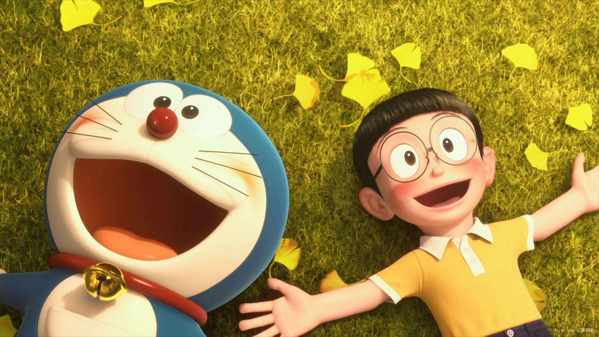

电影以漫画原著为基础，讲述了机器猫和大雄之间从相遇到分别的故事。
本片导演由山崎贵（《永远的三丁目的夕阳》）和八木龙一共同担纲，山崎贵执笔剧本。两人曾在2011年联手打造了3DCG动画《朋友：怪物岛的纳基》。两位导演都是机器猫的铁杆粉丝，此次毛遂自荐再度联手，将《哆啦A梦》搬上3D银幕。剧本以“爱情故事”和“哭泣的哆啦A梦”两卷故事为主轴。在再现原作中经典的“大雄的结婚前夜”、“从未来国度远道而来”、“再见，哆啦A梦”等部分名场景的同时，也会添加新的剧情要素构成新的剧本。 [17] 为追求质感，本片角色虽然全部用CG制作，但场景却是用微缩模型搭建。
角色造型耗时一年多，角色的动作、表情都力图接近现实，在不破坏原本的世界观的前提下，细致小心地进行设定。两位导演为了保证角色动作、表情的真实，也一反日本动画的制作传统，先收录声优的配音，之后再根据声优的发音口型、语气为角色配上相应的口型和神态。